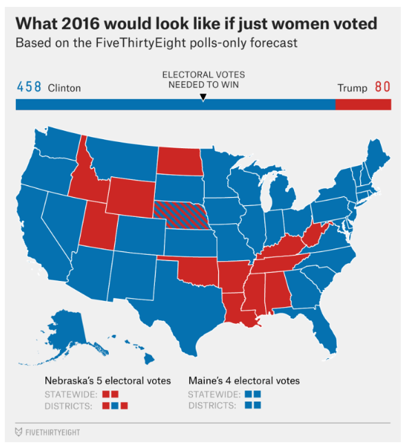

Marks
- the first mark, going from top to bottom, is the line of the bar chart.
- the second mark would be area because of the spatial chart of the US.
Channels
- For the bar chart, we are looking at horizontal positional channels because we need at least 270 electoral votes to win.
- The bottom chart uses color channel between the two parties.
Colormaps
- Colormap 1
- Both the bar chart and spatial US chart use categorical coloring.
Marks
- The marks are points.
Channels
- The channels are horizontal, vertical, and color.
Colormaps
- The colormap is an ordinal divergent because you are diverging from the average either below or above. It is ordinal because the color has a specific meaning like purple being below average and orange being above average.
Marks
- Because this is a racetrack being filled in the mark is an area.
Channels
- The channels are color.
Colormaps
- The colormap is an ordinal divergent because you are diverging from the center being 0, or no difference in speed between either driver. It is ordinal because the color has a specific meaning like purple being below speed and above being above average in Kph.